欄位：原圖 / 分部位圖層 / 部位標註 / 分區色塊。
| 檔案 | 尺寸 | SVG | SVG(分部位) | 標註 | 分區 | 資料 |
|---|---|---|---|---|---|---|
| leijun_full_back | 22×62 | 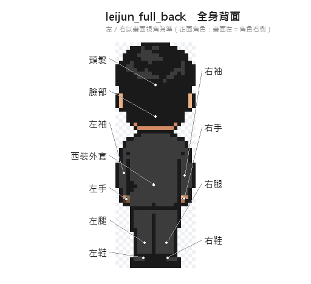 | 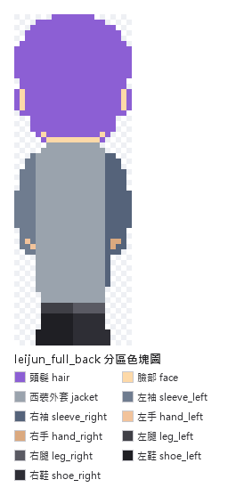 | json 說明 | ||
| leijun_full_front | 21×64 | 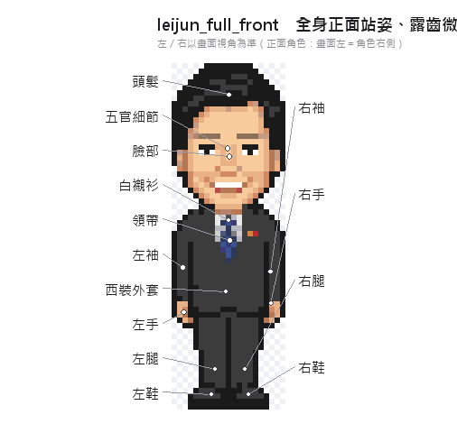 | 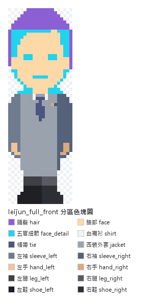 | json 說明 | ||
| leijun_full_side_right | 23×62 | 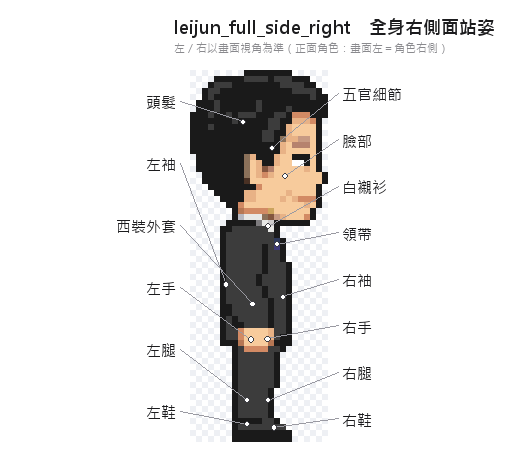 | 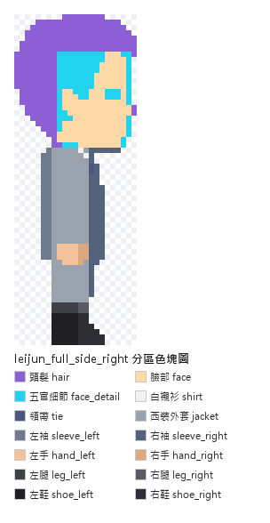 | json 說明 | ||
| leijun_full_walk_front | 24×64 | 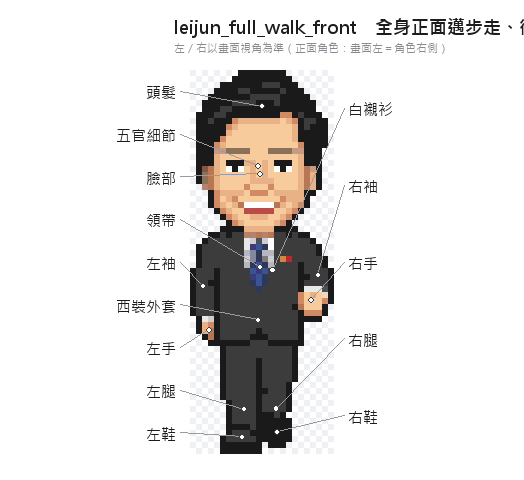 | 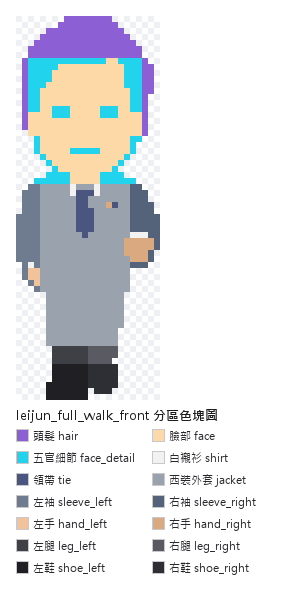 | json 說明 | ||
| leijun_full_walk_side_right | 24×62 | 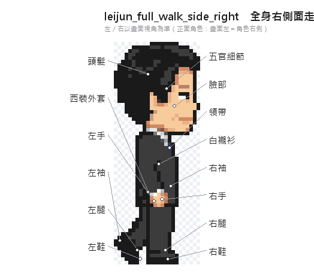 | 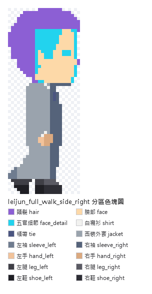 | json 說明 | ||
| leijun_full_wave | 33×64 | 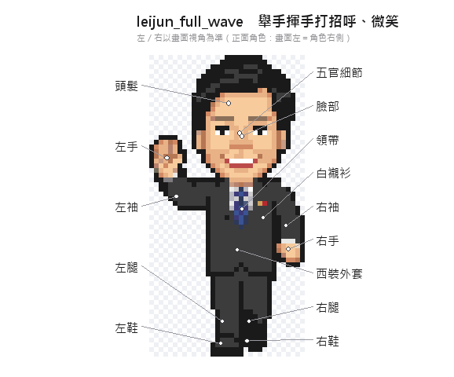 | 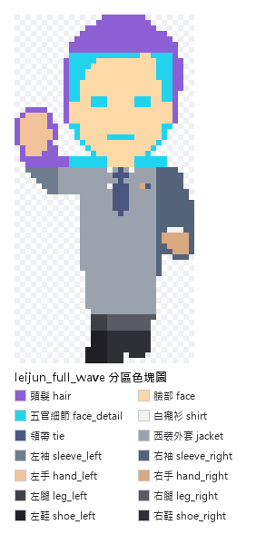 | json 說明 |